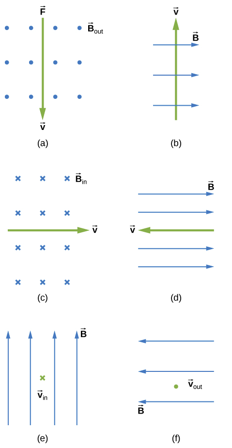
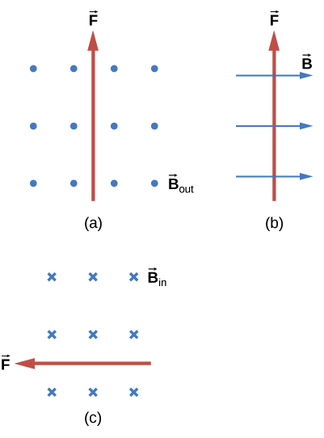

D5.2 Problems#
Problem D5.1
What is the direction of the magnetic force on a positive charge that moves as shown in each of the six cases? Ignore the \(\vec{F}\) on top of Part (a).
This problem is a slightly modified version from OpenStax. Access for free here
# DIY Cell
Show code cell source
%reset -f
#Use RHR
print('(a): to the left on the page')
print('(b): into the page')
print('(c): up on the page')
print('(d): no magnetic force')
print('(e): to the right on the page')
print('(f): down on the page')
Show code cell output
(a): to the left on the page
(b): into the page
(c): up on the page
(d): no magnetic force
(e): to the right on the page
(f): down on the page
Problem D5.2
What is the direction of the velocity of a negative charge that experiences the magnetic force shown in each of the three cases, assuming it moves perpendicular to B?
This problem is a slightly modified version from OpenStax. Access for free here
# DIY Cell
Show code cell source
%reset -f
#Use RHR
print('(a): to the right on the page')
print('(b): into the page')
print('(c): down on the page')
Show code cell output
(a): to the right on the page
(b): into the page
(c): down on the page
Problem D5.3
A cosmic ray proton moving toward Earth at \(5.00\times 10^7\) m/s experiences a magnetic force of \(1.70\times 10^{-16}\) N. What is the strength of the magnetic field if there is a \(45^\circ\) angle between it and the proton’s velocity?
Is the value obtained in part 1 consistent with the known strength of Earth’s magnetic field on its surface?
This problem is a slightly modified version from OpenStax. Access for free here
# DIY Cell
Show code cell source
%reset -f
import sympy as sym
import numpy as np
q = 1.602E-19
v = 5.00E7
fb = 1.70E-16
theta = np.radians(45)
#Part 1
B = sym.Symbol('B')
eq = fb - q*v*B*sym.sin(theta)
sol = sym.solve(eq,B)
print('The magnetic field is '+str(sol[0])+' T')
# Part 2
print('The order of magnitude is reasonable')
Show code cell output
The magnetic field is 3.00145200503653e-5 T
The order of magnitude is reasonable
Problem D5.4
A cosmic-ray electron moves at \(7.5\times 10^6\) m/s perpendicular to Earth’s magnetic field at an altitude where the field strength is \(1.0\times 10^{−5}\) T. What is the radius of the circular path the electron follows?
This problem is a slightly modified version from OpenStax. Access for free here
# DIY Cell
Show code cell source
%reset -f
import numpy as np
q = -1.602E-19
m = 9.109E-31
v = 7.5E6
B = 1.0E-5
R = (m*v)/(np.abs(q)*B)
print('Radius is '+str(R)+' m')
Show code cell output
Radius is 4.264513108614231 m
Problem D5.5
Viewers of Star Trek have heard of an antimatter drive on the Starship Enterprise. One possibility for such a futuristic energy source is to store antimatter charged particles in a vacuum chamber, circulating in a magnetic field, and then extract them as needed. Antimatter annihilates normal matter, producing pure energy. What strength magnetic field is needed to hold antiprotons, moving at \(5.0\times 10^7\) m/s in a circular path \(2.00\) m in radius? Antiprotons have the same mass as protons but the opposite (negative) charge.
Is this field strength obtainable with today’s technology or is it a futuristic possibility considering the strongest laboratory magnet today is 45 T?
This problem is a slightly modified version from OpenStax. Access for free here
# DIY Cell
Show code cell source
%reset -f
import numpy as np
import sympy as sym
m = 1.67E-27
q = -1.602E-19
v = 5.0E7
R = 2.00
#Part 1
B = sym.Symbol('B')
# F_net = mv^2/R
eq = np.abs(q)*v*B - (m*v**2)/R
sol = sym.solve(eq,B)
print('The magnetic field is '+str(sol[0])+' T')
print(' ')
print('Yes, it is reasonable')
Show code cell output
The magnetic field is 0.260611735330836 T
Yes, it is reasonable
Problem D5.6
What voltage will accelerate electrons to a speed of \(6.00\times 10^7\) m/s?
Find the radius of curvature of the path of a proton accelerated through this potential in a \(0.500\) T field and compare this with the radius of curvature of an electron accelerated through the same potential.
This problem is a slightly modified version from OpenStax. Access for free here
# DIY Cell
Show code cell source
%reset -f
Problem D5.7
An alpha-particle (\(m = 6.64\times 10^{−27}\) kg, \(q = 3.2\times 10^{−19}\) C)travels in a circular path of radius \(25\) cm in a uniform magnetic field of magnitude \(1.5\) T.
What is the speed of the particle?
What is the kinetic energy in electron-volts?
Through what potential difference must the particle be accelerated in order to give it this kinetic energy?
This problem is a slightly modified version from OpenStax. Access for free here
# DIY Cell
Show code cell source
%reset -f
Problem D5.8
A dc power line for a light-rail system carries \(1000.0\) A at an angle of \(30.0^\circ\) to Earth’s \(5.0\times 10^{−5}\) T field.
What is the force on a \(100\)-m section of this line?
Discuss practical concerns this presents, if any.
This problem is a slightly modified version from OpenStax. Access for free here
# DIY Cell
Show code cell source
%reset -f
Problem D5.9
The strengths of the fields in the velocity selector of a Bainbridge mass spectrometer are \(B = 0.500\) T and \(E = 1.2\times 10^5\) V/m, and the strength of the magnetic field that separates the ions is \(B_0 =0.750\) T. A stream of singly charged Li ions is found to bend in a circular arc of radius \(2.32\) cm. What is the mass of the Li ions?
This problem is a slightly modified version from OpenStax. Access for free here
# DIY Cell
Show code cell source
%reset -f
Problem D5.10
Triply charged uranium-235 and uranium-238 ions are being separated in a mass spectrometer. (The much rarer uranium-235 is used as reactor fuel.) The masses of the ions are \(3.90\times 10^{−25}\) kg and \(3.95\times 10^{−25}\) kg, respectively, and they travel at \(3.0\times 10^5\) m/s in a \(0.250\) T field. What is the separation between their paths when they hit a target after traversing a semicircle?
Discuss whether this distance between their paths seems to be big enough to be practical in the separation of uranium-235 from uranium-238.
This problem is a slightly modified version from OpenStax. Access for free here
# DIY Cell
Show code cell source
%reset -f